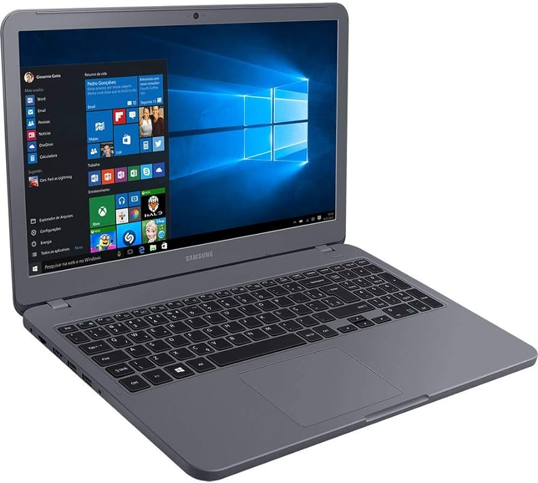

Praising Linux
It’s been 5 years since I discovered the magic of static blogs and tried to set up this website to use some of this magic. However, I had nothing to say and the project was put aside. This time I have something very interesting to publish, although not new.
I’ve been a happy Linux user for quit a while. This year marks the 10th year of completely ditching Windows for software development and technological discoveries in a domestic environment, mainly because I was using Linux in a daily basis at work and it felt great. Linux wasn’t something totally new for me - I’ve been experimenting with it for about two decades, actually. But Windows was the most appealing and most accessible option at the time, so I just went for it.
Most of my machines ran or are running Ubuntu. An AMD FX-8320 desktop with a R7 260X bought in 2015 - my first video card in 14 years dealing with computers, believe me - and running Windows 8.1 was used only for playing CS:GO. Not that I haven’t tried playing on Linux (I was a huge advocate of Linux gaming), but having to deal with every kernel update breaking the video became a pain.
A Samsung X55 - i7 8350H, 12 GB, MX110 - was my daily driver for 4 years. The screen sucked, but with a Samsung EVO 850ßß it was running Ubuntu so nice and smooth I felt bad when the keyboard became defective and unfixable.

I moved out of my parents’ house and as my dad had no computers, I lent the AMD desktop to him, bringing only my company’s Macbook Pro 2016 to my new home. With the i7’s keyboard defective and willing to have a personal machine, a couple years after I had to buy another one. My Christimas gift was an awesome and “up-to-date gaming” laptop - an i5 12450H with a GTX 1650 and a 144 Hz screen. Everything was new and exciting! I never dealt with NVMe SSDs and UEFI before. Unfortunately, it couldn’t run my beloved Ubuntu without being slow and buggy. I even tried other Linux flavors like Mint or Fedora just to give up once again to Windows, this time the version 10. I found it very good, actually, and I got to finally play CS:GO at 144 FPS. CS2 is awesome, but with a GTX 1650 I had to say farewell to those good extra frames.
Getting back to praising Linux. No matter the OS I was using in desktops or laptops, I always had a silent 24/7 companion - a Linux home server. I’m a fan of self-hosting since ever. Long before Raspberry Pi I remember having a Maiwo NS-K330 aka “DealExtreme NAS”. It was a very limited ARM machine running a 2.6 kernel, sold by DealExtreme. It had ethernet connectivity and two USB ports for plugging external disks, thumb drives and printers. Soon a brazilian developer released SnakeOS and it was fun to fiddle with its shell and web interface. Someone even got it to have OPKG running and people could install new software as they did in other Linux systems. I even cross-compiled USB/IP for someone in the DX NAS mailing list.
But it lacked some firepower and as I was getting more interested in Linux I needed to have something better. I had a spare Eee PC (ah, Celeron-M 900 MHz…) I bought circa 2009. It had the screen flat cable broken and was perfect for becoming a personal server, hidden somewhere in the office, with only a SSH port open. It didn’t. Something wrong with the BIOS turned it into a brick. Then I bought an used Asus Eee PC with its screen damaged. It had an Atom processor and was my first real Linux server, this time with Ubuntu Server - which became my weapon of choice for everything headless.
Back in the days in which streaming was not the basis of modern society, piracy downloading content ruled. It had to be stored somewhere to be served. That Eee with an external 1 TB Toshiba disk became a media server, but also a great playground for software development and security experiences. Eventually it got replaced by a Mac Mini with a Core 2 Duo processor - at that time Macs could run Linux without much trouble. The Mini consumed a lot of power, NUCs were getting popular and I replaced the Mac with a barebones Mr.NUC - a chinese NUC with a Celeron J1900, 64 GB mSATA SSD and a second hand 320 GB Hitachi HDD. And the same Toshiba external disk. I love the reliability of Toshiba and Hitachi disks.
This machine could run everything. It became a DNS server (first with BIND 9, then dnsmasq and now, Pi-hole), tried MediaTomb and MiniDLNA until settling with Plex. Downloading content was easy with Transmission for torrents and Soulseek (Nicotine) inside a Docker instance accessible thru VNC. It became a backup and file sync machine for all my devices with Syncthing and an exit node for my Tailscale VPN. It was awesome. At least while it could take being online 24/7. Sometimes it would reboot out of the blue. Replacing the power supply fixed the problem until the machine couldn’t complete a boot without rebooting indefinitely. Too bad it happened before implementing Mycroft - an open source voice assistant.
It’s been 5 months without turning on my home server and I’m still deciding what will be replacing the Celeron NUC. I’m very inclined towards an i3 N305 NUC as it has more firepower than the i7, way more than the J1900, while consuming no more than 15Wh. I was already planning ahead on buying a Celeron N100 NUC as my experiments with Mycroft didn’t go well. The machine simply had no processing power for smooth speech synthesis. The i7 laptop is the next in succession to become my home server while the NUC is not coming.
Comments? blog(a)mendel.xyz